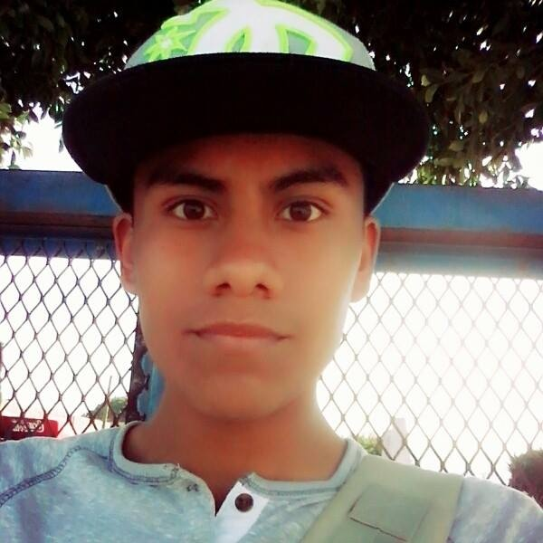
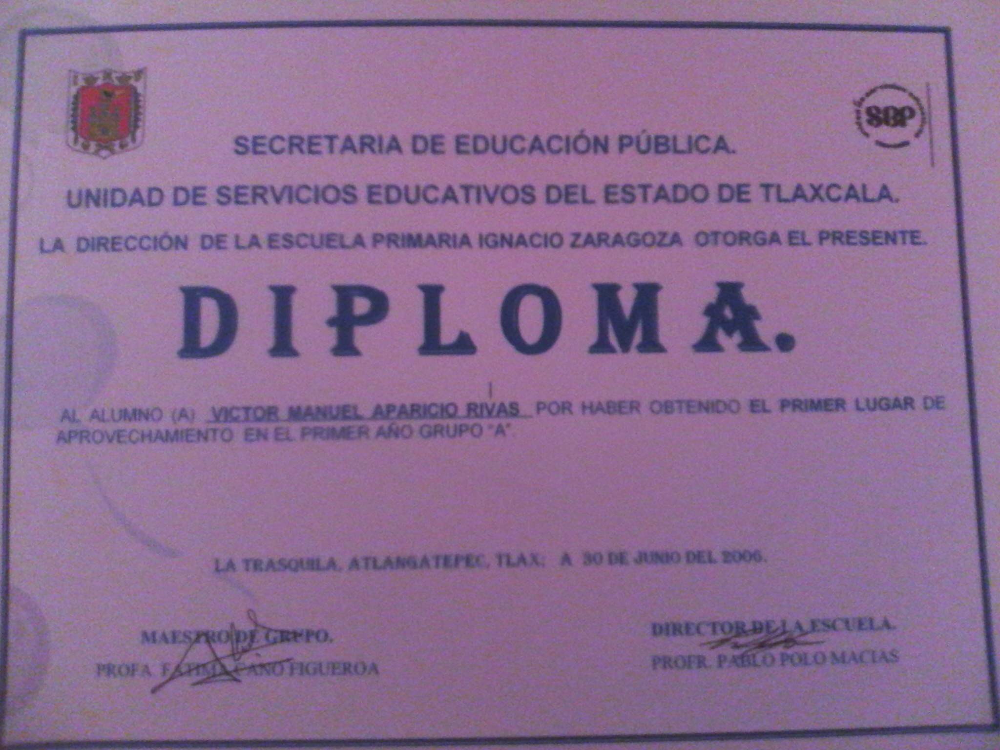
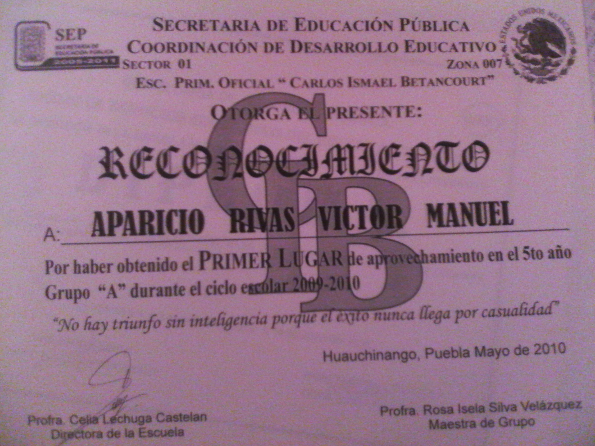
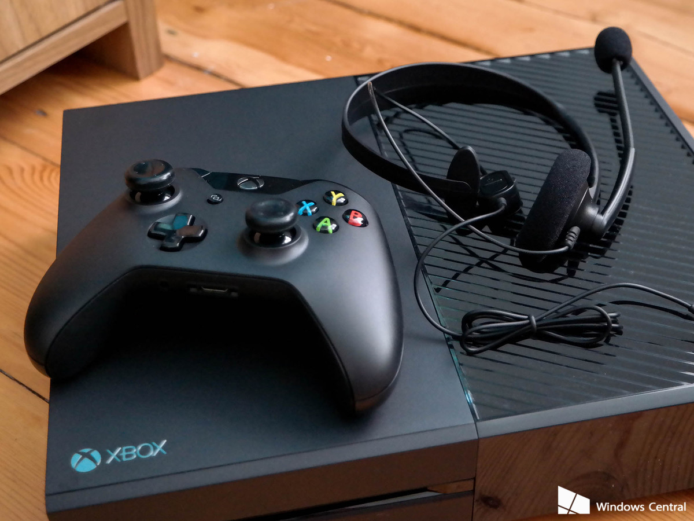

Autobiografìa VICTOR RIVAS
Victor Manuel Velàzquez Rivas
¿Quièn soy?
Mi nombre es Victor Manuel Velazquez Dìaz, nacì el 28 de enero de 1999 en Tlatelolco, Cuauhtemoc Distrito federal a las 3:40 pm. Mis padres son Alberto Velàzquez Dìaz y Graciela Rivas Olmos. Mis hermanos son Lizeth Velàzquez Dìaz y Bryam Velàzquez Dìaz.
Al año y dos meses aprendi a caminar.
Cuando tenia 4 años fui al kinder en Mexico, no me acuerdo como se llama el kinder al que fui.
Cuando tenia 7 años entre a la primaria Venustiano Carranza en La Trasquila, Tlaxcala. En segundo de primaria me mude a Apizaco a estudiar de 2° a 5° de primaria en la escuela Adolfo Lopez Mateos.
A mediados de 5° de primaria, llegue aqui a Huauchinango, Puebla a la escuela Carlos I. Betancourt. A los 13 años entre a la secundaria Benito Juarez. A los 15 entre al CBTIS 86 eligiendo la carrera de Programacion, ya que me encanta la tecnologia. Hoy voy en 4° semestre y pienso terminar bien mi carrera para estudiar en una Universidad.
Victor Manuel Velazquez Dìaz
Logros

- Cuando hiba en 1º de primaria, obtuve un diploma en 1º lugar de aprovechamiento y me felicitaron mis padres y todos mis amigos del salon, porque a todos les hablaba,.
- Tambien cuando hiba en 1º de primaria, fuimos a concursar a un baile el cual se llamaba "La Vaca" y yo era el protagonista principal, viajamos a no se que parte, concursaron varias escuelas pero ganamos el primer lugar... fue uno de mis mejores dias.

- En 5º de primaria obtuve un diploma de 1º lugar de aprovechamiento... eso que si no me lo esperaba, mi amigo se enojo de que segun "le quite su primer lugar" por que el quedo en 3º lugar.
- Uno de mis mayores logros es de llegar al CBTIS, ya que mis tios siempre le decian a mi papa que no hiba ni a terminar la secundaria, que hiba a terminar trabajando... y ahorita que voy en el CBTIS les demostre a mis padres y a mis tios que si puedo y lo lograrè pasar para ser alguien en la vida...
Victor Manuel Velazquez Dìaz
Pasatiempos
Futbol: Me gusta jugar futbol con mis amigos para pasar el rato ya sea que juguemos en la escuela o nos ponemos de acuerdo para ir a un campo.
Musica: En mis ratos libres me gusta escuchar musica ya que me ayuda a pensar, a reflexionar y hasta cuando estoy trabajando me ayuda a concentrarme. Los generos que mas escucho son rap yelectronica y mi artista favorito es Deadmau5.

Videojuegos: Cuando tengo dinero voy con mi hermano a los play a jugar xbox, mi juego favorito es FIFA 16.
Victor Manuel Velàzquez Rivas
Aspiraciones
Pues... aun no he decidido bien que voy a estudiar bien, me llama la atencion gastronomia pero es un poco estresante y pesada. Estoy todavia pensando que es lo que quiero estudiar... estas carrearas son las que me llaman la atencion.

Gastronomia
Criminologia
Psicologia
Aun no se cual elegir, o talvez eliga otra, pero me esforzare por terminar la carrera por mi bien... :)
Victor Manuel Velàzquez Rivas